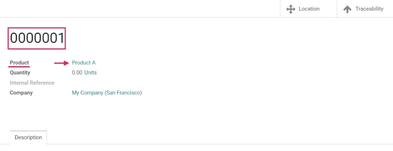

Usar números de serie para rastrear productos¶
Los números de serie son una de las dos maneras en las que podemos identificar productos para rastrearlos con Odoo. Un número de serie es un identificador único que se le asigna a los productos o artículos de manera incremental (o secuencial) para distinguirlos de otros productos y artículos.
Los números de serie consisten de diferentes tipos de caracteres: pueden ser solo numéricos, o pueden contener letras y otros tipos de símbolos tipográficos. También pueden ser una mezcla de todos los anteriores.
Asignamos números de serie a productos individuales para asegurarnos de que es posible identificar el historial de cada artículo conforme se mueve a lo largo de la cadena de suministro. Esto puede ser útil para fabricadores que proveen servicios posventa a productos que ya vendieron y entregaron.
Ver también
Activar lotes y números de serie¶
Para rastrear productos usando los números de serie debe activar la función Números de lote y de serie. Para hacerlo, vaya a , baje a la sección Trazabilidad y haga clic en la casilla junto a Números de lote y de serie. Acuérdese de hacer clic en el botón Guardar.

Configurar el rastreo por número de serie en los productos¶
Ya que activó los Números de lote y de serie podrá rastrear productos individuales mediante los números de serie. Para configurar esto, vaya a y seleccione el producto que quiere rastrear.
Ya que esté en el formulario de producto, haga clic en Editar y después en la pestaña Inventario.
En el formulario de producto vaya a la pestaña Inventario y baje a la sección Trazabilidad. Después seleccione la opción Por número de serie único y haga clic en el símbolo de nube para guardar los cambios de manera manual. Ahora puede seleccionar números de serie existentes o nuevos a lotes de este producto que reciba o fabrique.
Advertencia
Si no se le ha asignado un número de serie a un producto, aparecerá una ventana amergente de error del usuario. En el error se le indicará que tiene productos en existencia que no cuentan con número de serie/de lote, pero usted les puede asignar uno con un ajuste de inventario
Crear nuevos números de serie para productos que ya están en existencias.¶
Puede crear nuevos números de serie para productos que ya están en existencias y que no tengan un número de serie activados. Para esto, vaya a y haga clic en Nuevo. En este formulario se generará un nuevo Número de lote/serie de manera automática.
Truco
Aunque Odoo genera el nuevo número de lote/serie de manera automática según el número más reciente, usted lo puede cambiar a que sea el número que usted quiera. Solo tiene que hacer clic en la línea debajo del título Número de lote/serie y cambie el número que se generó.
Una vez que se haya generado el Número de lote/serie, haga clic en el campo junto a Producto para mostrar un menú desplegable. En este menú seleccione el producto al que se le asignará el nuevo número.
En este formulario también tendrá la opción de ajustar la Cantidad para asignar un número de Referencia interna único (por motivos de trazabilidad) y para asignarle una configuración de número de lote/serie a un sitio web específico en el campo Sitio web (si está trabajando en un entorno con varios sitios web).
También puede agregar una descripción detallada para este número de lote/serie en la pestaña Descripción que se encuentra abajo.
Cuando complete la configuración, haga clic en Guardar para guardar los cambios que hizo.
Ya que se ha creado un nuevo número de serie lo podrá asignar al producto que quiera. Ya que los cambios se hayan guardado, regrese al formulario de producto mediante el menú y seleccione el producto al que se le asignó el número de serie que acaba de crear.
En el formulario del producto, haga clic en el botón inteligente Número de lote/serie para ver el número de serie nuevo
Gestionar números de serie de envíos y recepciones¶
Puede asignarle números de serie a bienes tanto salientes como entrantes. Para bienes entrantes, debe asignar el número de serie directamente en el formulario de la orden de compra. Para bienes salientes, los números de serie se asignan directamente en el formulario de la orden de venta.
Gestione los números de series en recepciones¶
Puede asignar números de serie a bienes entrantes directamente desde la orden de compra.
Para crear una Orden de compra vaya a . Esto lo llevará a una nueva solicitud de cotización en blanco.
En este formulario de Solicitud de cotización debe llenar la información necesaria. Agregue un Proveedor. los productos deseados en las líneas de productos y, en la pestaña de productos, haga clic en Agregar un producto.
Para seleccionar la cantidad que quiere ordenar del producto, solo cambie el número en la columna Cantidad.
Cuando termine de realizar la configuración necesaria, haga clic en Confirmar orden. Esto hará que la solicitud de cotización se convierta en una orden de compra.
Después, haga clic en el botón inteligente Recepción para ir al formulario de recepción al almacén para esa orden de compra en específico.
Advertencia
Si presiona el botón Validar antes de asignar un número de serie a los productos que ordenó hará que una ventana emergente de Error de usuario aparezca. La ventana emergente necesita que ingrese un lote o número de serie para los productos que ordenó. Las Solicitudes de cotización no se pueden validar sin que se les haya asignado un número de serie.

Desde aquí, haga clic en el menú Opciones adicionales (cuatro líneas horizontales a la derecha de la columna Unidades de medida en la pestaña Operaciones). Al hacer clic en este icono, aparecerá una ventana emergente de Operaciones detalladas.
En esta ventana emergente puede configurar varios campos, incluyendo la asignación de un número (o números) de serie en la columna Nombre del número de lote / de serie que se ubica en la parte inferior de la ventana emergente.
Hay tres maneras de lograr esto: asignar números de serie usted mismo, que los números de serie se asignen de manera automática, o puede copiar y pegar números de serie desde una hoja de cálculo.
Usted mismo asigne números de serie¶
Para asignar números de serie de manera manual, haga clic en Agregar una línea en la ventana emergente Operaciones detalladas. En la columna Ubicación podrá decidir dónde se almacenará.
Ahora escriba un Nombre del número de serie e inserte la cantidad Hecha en la columna apropiada.
Repita este proceso para la cantidad de productos que se muestre en el campo demanda y hasta que el campo Cantidad hecha muestre el número de productos procesados correcto.
Asigne números de serie de manera automática¶
Si necesita asignar números de serie a muchos productos, Odoo puede generar y asignar números de serie para cada producto individual de manera automática.
Para lograr que Odoo haga esto, en la ventana emergente Operaciones detalladas ponga el primer número de serie en el orden que los quiere asignar en el campo Primer NS.
Después escriba el número total de artículos a los que necesita asignar un nuevo número de serie en el campo Cantidad de NS.
Finalmente, haga clic en Asignar números de serie para que la lista se llene con números de serie que coincidan con el número de productos que ordenó.

Copiar y pegar los números de serie desde una hoja de cálculo¶
Para copiar y pegar los números de serie desde una hoja de cálculo existente, primero debe llenar el archivo con todos los números de serie que recibió del proveedor (o que usted escogió de manera manual al recibir la mercancía). Después debe copiar y pegarlos en la columna Nombre del número de lote/serie, de esta manera Odoo creará el número de líneas necesarias según los números que pegó en la columna.
Desde aquí, podrá ingresar tanto las cantidades hechas como las ubicaciones en cada línea de número de serie

Truco
Si está trabajando con órdenes de compra que contienen una cantidad muy grande de productos por recibir, el mejor método para asignar números de serie es con el botón Asignar números de serie que podrá encontrar en la orden de compra. De esta manera podrá evitar que los números de serie se reciclen o se dupliquen, además de que mejora la trazabilidad en los reportes.
Ya que se le asignó un número de serie a todas las cantidades de un producto, haga clic en el botón Confirmar para cerrar la ventana emergente y después, haga clic en Validar.
Al validar una recepción aparecerá un botón inteligente de Trazabilidad. Haga clic en este botón para ver el reporte de trazabilidad, en el que se incluye el documento de Referencia, el Producto que se está rastreado, el Lote/número de serie y más.
Ya que se le asignó un número de serie a todas las cantidades de un producto, haga clic en el botón Confirmar para cerrar la ventana emergente y después, haga clic en Validar. Al validar una recepción aparecerá un botón inteligente de Trazabilidad. Haga clic en este botón para ver el reporte de trazabilidad, en el que se incluye el documento de Referencia, el Producto que se está rastreado, el Lote/número de serie y más.
Gestionar números de serie en órdenes de entrega¶
Puede asignar números de serie a bienes salientes desde la orden de venta.
Para crear una Orden de venta vaya a la aplicación y haga clic en el botón Crear, lo que lo llevará a un formulario de cotización en blanco. Llene la información necesaria, agregue un Cliente y, para agregar productos en las líneas de producto (en la pestaña Líneas de la orden), solo tiene que hacer clic en Agregar un producto.
Después, si quiere elegir la cantidad que quiere vender, cambie el número que se encuentra en la columna Cantidad.
Para confirmar la cotización solo tiene que hacer clic en el botón Confirmar. Así, la cotización se creará y se convertirá en una orden de venta, además de que aparecerá un botón inteligente de Entrega.
Haga clic en el botón inteligente Entrega para ver el recibo de en el almacén para esa Orden de venta en específico.
Desde aquí, haga clic en el menú Opciones adicionales (cuatro líneas horizontales a la derecha de la columna Unidades de medida en la pestaña Operaciones). Al hacer clic en este icono, aparecerá una ventana emergente de Operaciones detalladas.
En la ventana emergente, se elegirá un número de lote o de serie en automático, cada producto de la cantidad Reservada total se enlista con sus números de serie únicos (probablemente en secuencia).
Para cambiar el número de serie de manera manual, haga clic en el menú desplegable de Número de lote/serie y escoja (o escriba) el número de serie que quiera. Luego marque las cantidades Hechas y haga clic en Confirmar para cerrar la ventana emergente.
Primero, haga clic en el botón Validar para entregar los productos.
Al validar la orden de entrega, aparecerá un botón inteligente de Trazabilidad. Haga clic en este botón para ver el Reporte de trazabilidad actualizado, el cual incluye el documento de Referencia, el Producto al que le está dando seguimiento, la Fecha y el Lote/Número de serie asignados.
El Reporte de trazabilidad también incluye un recibo de Referencia desde la orden de compra anterior, si las cantidades del producto comparten un número de serie que se les asignó durante la recepción de esa Orden de compra.
Gestionar números de serie para distintos tipos de operaciones¶
De forma predeterminada en Odoo, solo es posible crear nuevos números de serie al recibir productos de una orden de compra y no puede usar números de serie existentes. Con las órdenes de venta ocurre lo contrario: no es posible crear nuevos números de serie en la orden de entrega, solo puede usar números existentes.
Para cambiar la habilidad de usar nuevos (o ya existentes) números de serie en cualquier tipo de operación, vaya a y seleccione el Tipo de operación deseado.
En la página Tipos de operaciones vaya al tipo de operación Recepciones, donde podrá activar la opción Utilizar números de lote o de serie existentes en el formulario del tipo de la operación. Solo debe abrir el formulario y marcar la casilla junto a la opción Utilizar existentes que se encuentra en la sección de Números de lote/serie. Recuerde que en Odoo 16 sus cambios se guardan en automático, pero también los puede guardar de forma manual mediante el icono de nube que se encuentra junto al nombre del tipo de operación.
En la página Tipos de operaciones vaya al tipo de operación Órdenes de entrega, donde podrá activar la opción crear nuevos números de lote o de serie en el formulario del tipo de la operación. Solo debe abrir el formulario y marcar la casilla junto a la opción Crear nuevo que se encuentra en la sección de Números de lote/serie. Recuerde que en Odoo 16 sus cambios se guardan en automático, pero también los puede guardar de forma manual mediante el icono de nube que se encuentra junto al nombre del tipo de operación.

Trazabilidad del número de serie¶
Los fabricantes y las empresas podrán consultar los reportes de trazabilidad para ver el ciclo de vida completo de un producto: de dónde (y cuándo) vino, dónde se almacenó y a quién (y cuándo) se le entregó.
Para ver la trazabilidad completa de un producto o agrupar por números de serie, vaya a la aplicación . De esta manera podrá ver el tablero de :guilabel:Números de lote/serie`.
Aquí se enlistarán en automático todos los productos a los que se les haya asignado un número de serie y se podrá expandir para mostrar los números de serie que esos productos tienen asignados.
Para agrupar por números de serie (o lotes), primero quite todos los filtros automáticos de la barra de búsqueda en la esquina superior derecha. Después, haga clic en Agrupar por y seleccione Agregar grupo personalizado, lo que le mostrará un menú desplegable desde donde podrá seleccionar un Lote/Número de serie. Finalmente, haga clic en Aplicar.
Al hacer esto se mostrarán todos los números de serie y de lote existentes y puede expandir la vista para mostrar todas las cantidades de productos que tienen ese número asignado. Para números de sere únicos que no se van a volver a usar, debería haber solo un producto por número de serie.

Truco
Para más información sobre números de serie (o lotes) individuales, haga clic en la línea de artículo para el número de serie para mostrar el formulario de ese número de serie en específico. Cuando esté en el formulario haga clic en los botones inteligentes Ubicación y Trazabilidad para ver todas las existencias a la mano que usan ese número de serie y todas las operaciones que se hacen con es número de serie.
Ver también